GMLake: Efficient and Transparent GPU Memory Defragmentation for
Large-scale DNN Training with Virtual Memory Stitching
ASPLOS ’24
Memory fragmentation issue
- Serving or training LLMs require substantial amount of memory.
- Tensor frameworks like PyTorch adopt a caching allocator which maintains a memory pool.
- The efficiency of caching allocators degrade quickly as the service progresses:
- Popular memory saving techniques are employed: recomputation, KV cache offloading, distributed training and low-rank adaption.
- Frequent and irregular memory allocation requests.
Memory fragmentation issue
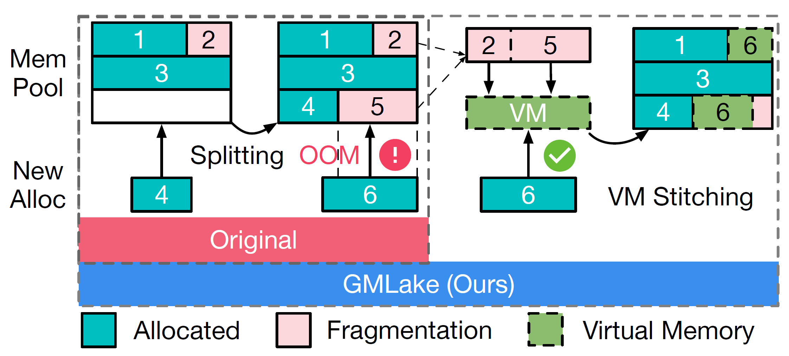
Memory Management of DL Framework
Three types of memory management:
- GPU native allocator
- Simple and inefficient
- 9.7\(\times\) slower than PyTorch caching allocator
- Caching allocator
- Split-based
- Physical memory
- Fragmentation issue
- Virtual memory allocator
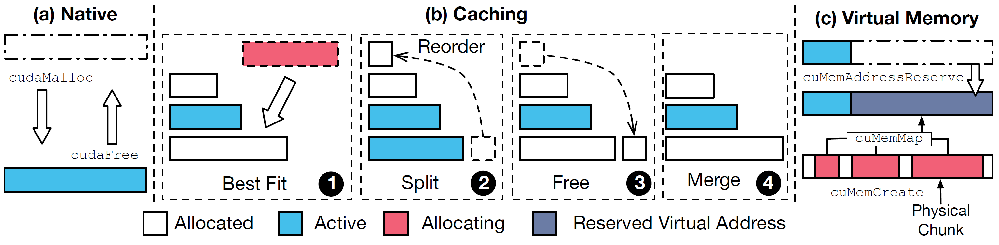
Memory-efficient Optimizations in DNN inference and training
- Recomputation (R): drop several layers’ computation results (activations), later recalculate them.
- Offloading (O): KV cache blocks swapping, DeepSpeed ZeRO offloads FP32 optimizer states to CPU memory.
- LoRA (L): rank-decomposition matrices
Memory-saving but poor memory utilization
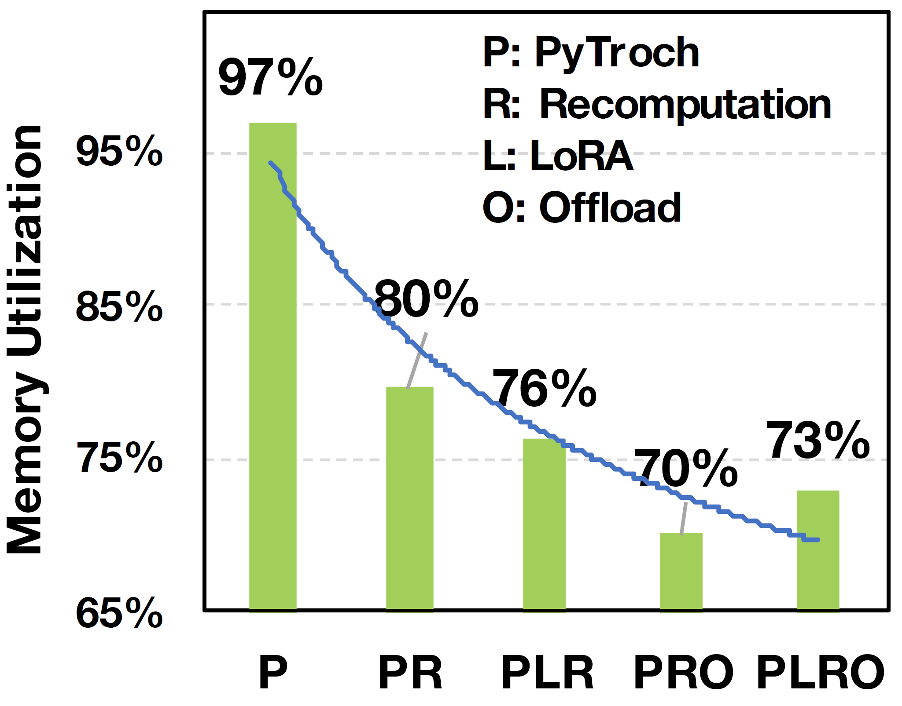
PyTorch origin: 46K allocations with an average size of 93MB. PyTorch + LR: 76K allocations with an average size of 85MB.
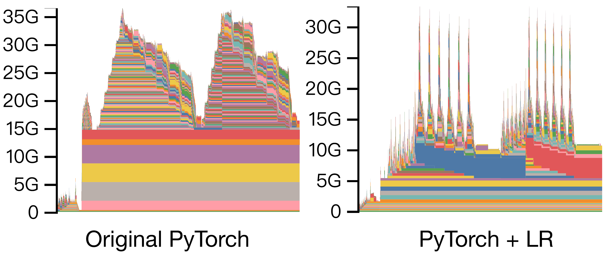
More fragmentation in Distributed Training
Parallel techniques partitions inputs, layers, weights, intermediates, optimizer states, …
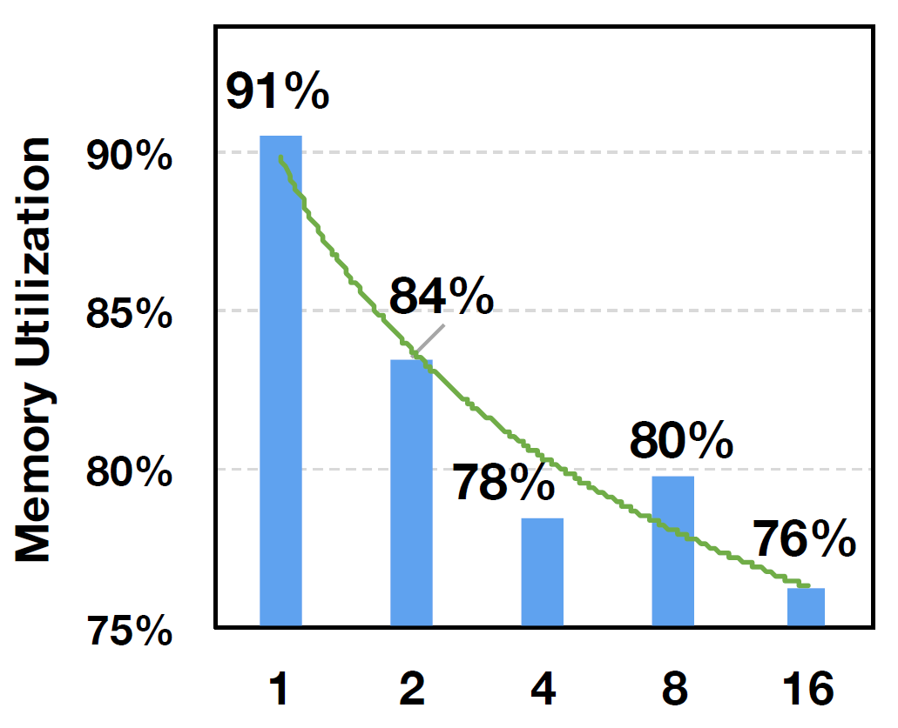
Low-level Virtual Memory (VM) Management
VMM can allocate and map the non-contiguous physical chunks, which can tackle GPU memory fragmentation issues.
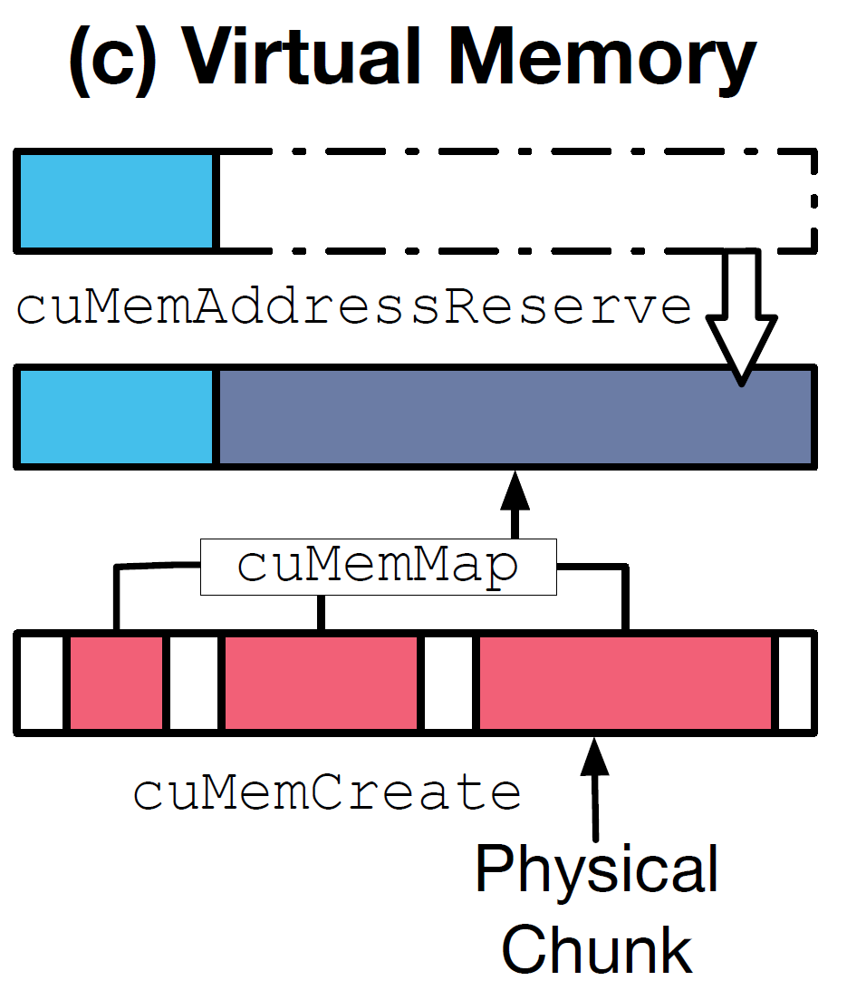
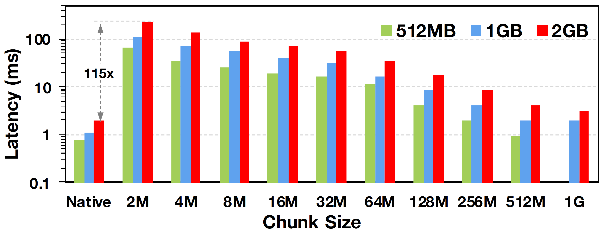
Original virtual memory allocator on GPU still presents many challenges and needs further optimization.
| Chunk Size | 2 MB | 128 MB | 1024MB |
|---|---|---|---|
| cuMemReserve | 0.003 | 0.003 | 0.002 |
| cuMemCreate | 18.1 | 0.89 | 0.79 |
| cuMemMap | 0.70 | 0.01 | 0.002 |
| cuMemSetAccess | 96.8 | 8.2 | 0.7 |
| Total | 115.4 | 9.1 | 1.5 |
GMLake Design
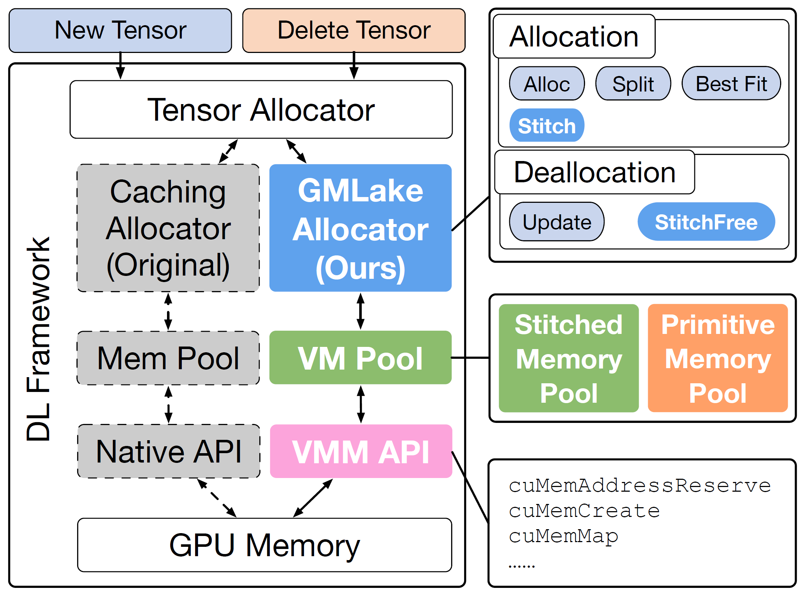
- Virtual memory API: low-level APIs employed to instruct the GPU to allocate and free memory using virtual memory addresses
- Virtual memory pool: Foundational data structure designed for caching virtual memory
- GMLake allocator: functions, algorithms and strategies to manage the VM pool
Virtual Memory API
VMM APIs are used to build primitive blocks (pBlocks), the smallest unit (2MB chunk size) accessible to high-level tensors:
- AddrReserve: Reserve the VA of a pBlock for the given size
- Create: Create physical chunks
- Map: Map all physical chunks to the virtual address
Virtual Memory Pool
Given that original VMM APIs are time-consuming, it is crucial to reduce their usages to achieve high efficiency for GMLake.
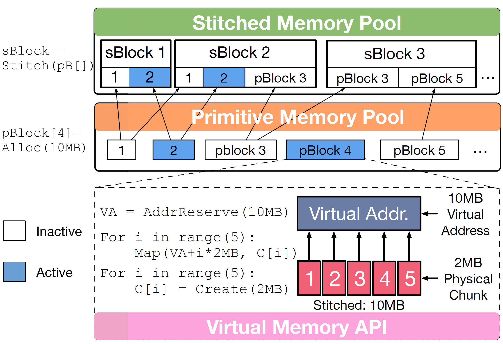
- pPool: a sorted set of pBlocks
- sPool: a sorted set of sBlocks
- Each sBlock consists of multiple pBlocks
- Each inactive pBlock can be used by multiple sBlocks
- sBlock remaps pBlocks’ VA, making it accessible by high-level tensors
Allocator
Allocation Module
- Alloc: allocate a new pBlock
- Split: divide a pBlock into smaller pBlocks
- Stitch: create an sBlock
Allocation Strategy (best fit)
- Exact match (S1)
- Single block (S2)
- Multiple blocks (S3)
- Insufficient blocks (S4)
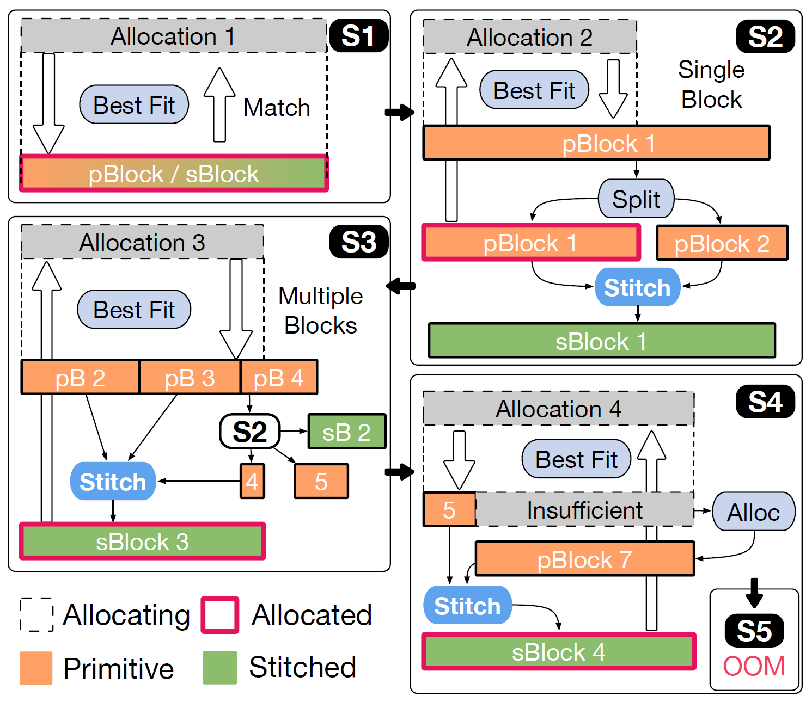
Deallocation Module
- Update: remove the links between tensors and blocks, put the VM back to sPool
- StitchFree: release LRU inactive sBlocks
Defragmentation Strategy Analysis
- Only when there’s no enough memory blocks (total size), will the allocator request new physical memory blocks from CUDA.
- DNN model training is highly regularized, therefore, after a few iterations, S2-S4 no longer occurs. (?)
Evaluation
Environment Setup
- Testbed:
- Intel Platinum 8369B
- 1TB DRAM
- 8x NVIDIA A100 80GB
- NVLINK
| Model | Strategies | DDP Framework |
|---|---|---|
| OPT-1.3B | L R O | DeepSpeed |
| GPT-2 | R O | Colossal-AI |
| GLM-10B | R O | FSDP |
| OPT-13B | L R O | DeepSpeed |
| Vicuna-13B | L R O | DeepSpeed |
| GPT-NeoX-20B | L R O | DeepSpeed |
Metrics
Memory utilization ratio: \(\frac{PeakActiveMemory}{PeakReservedMemory}\)
Memory utilization on memory-efficient stategy combinations
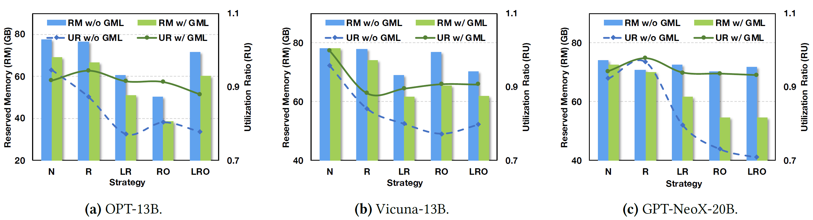
- Complicated strategies lead to fragmentation
- GMLake effectively reduces fragmentation to 5%-10%
GPU scale-out
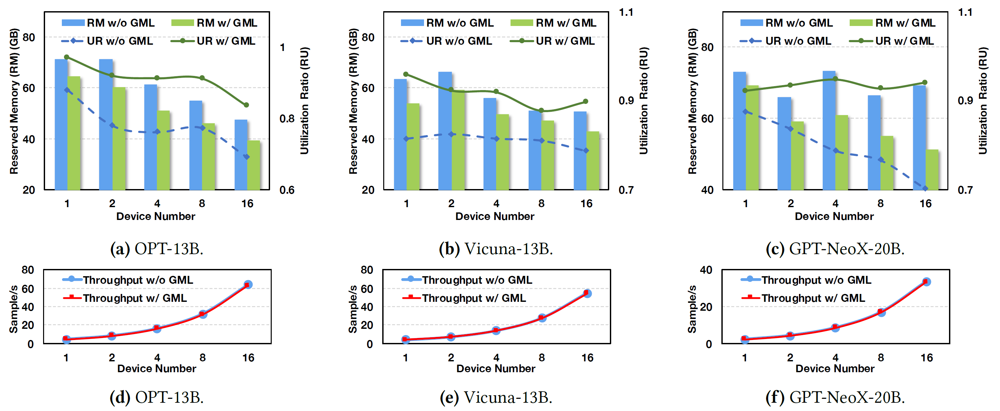
Different frameworks
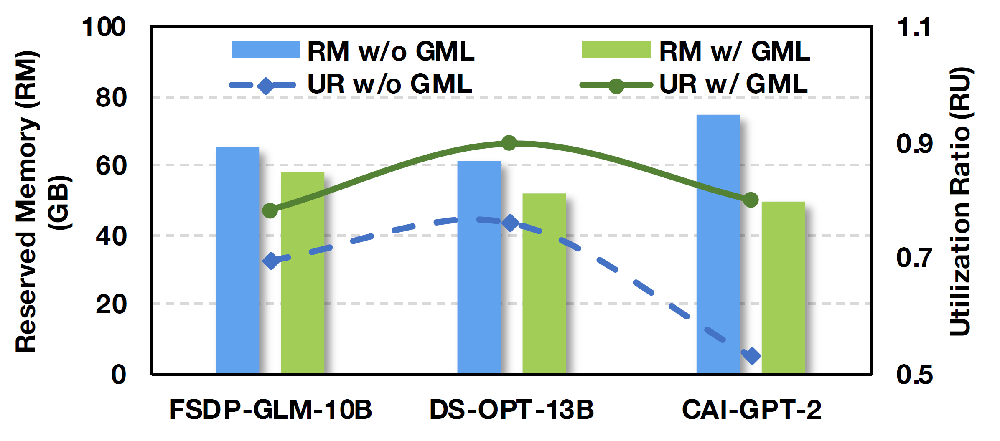
Different batch sizes
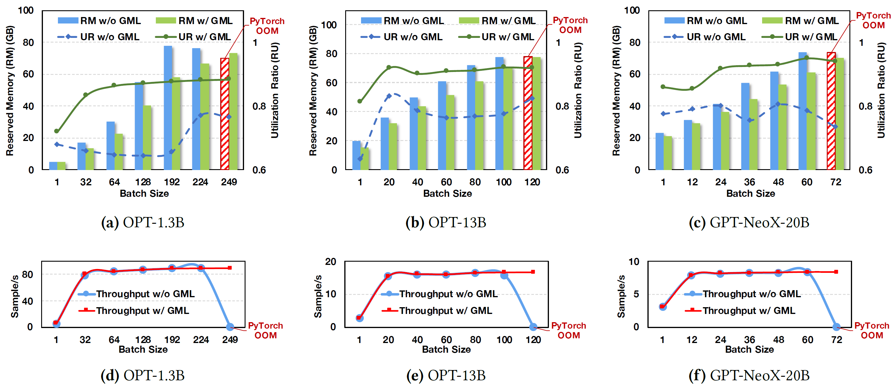
Memory trace
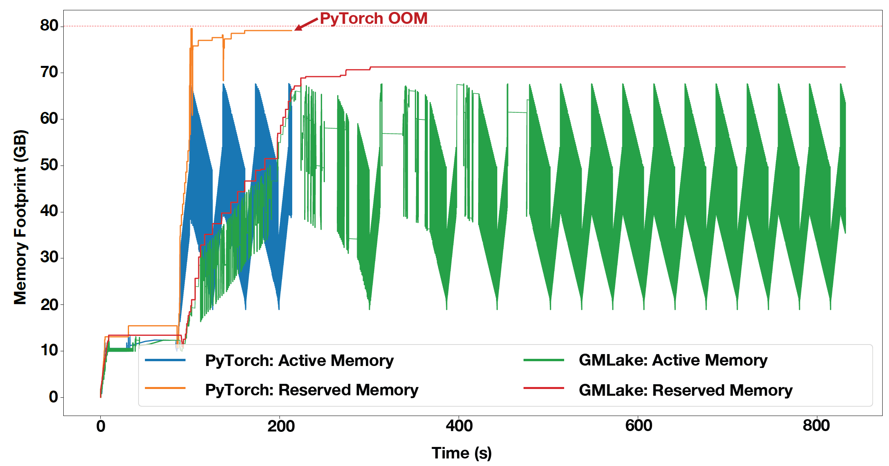